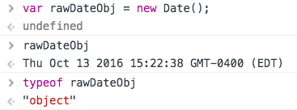
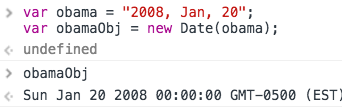
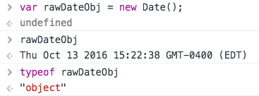
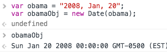
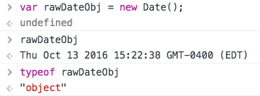
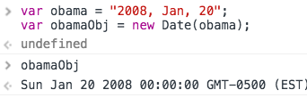
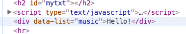

WileyJS
Wiley js Ch3
functions within functions
functions as variables
Here is a var with a "function value"
var spokenWord = function(word) {
var content = $('#mytxt').text(word);
return content;
};
var speak = spokenWord("Hey!");
// Hey!
Here we put this function within a function & wrap that inner Fn in parens to make it self-executing var spokenWord = (function() { return (function(word) { var content = $('#mytxt').text(word); return content; }); })(); var speak = spokenWord("Hey!"); // Hey!
Here we put this function within a function & wrap that inner Fn in parens to make it self-executing var spokenWord = (function() { return (function(word) { var content = $('#mytxt').text(word); return content; }); })(); var speak = spokenWord("Hey!"); // Hey!
function sayhi(first, last) {
var greet = "Hi, " + first + " " + last;
return $('#mytxt').text(greet);
}
sayhi("Joe", "Shmo");
Now we can place the Fn onto a var-->Giving that var a "function value" var sayHi = function(first, last) { var greet = "Hi, " + first + " " + last; return $('#mytxt').text(greet); }; var message = sayHi('Bill', 'Gates');
Here we will wrap that function within a function to make it self-executing var sayHi = (function() { return function(first, last) { var greet = "Hi, " + first + " " + last; return $('#mytxt').text(greet); }; })(); var message = sayHi('Bill', 'Gates');
We get HI, Joe Shmoe
Now we can place the Fn onto a var-->Giving that var a "function value" var sayHi = function(first, last) { var greet = "Hi, " + first + " " + last; return $('#mytxt').text(greet); }; var message = sayHi('Bill', 'Gates');
placing a var "message" with params for the "function value" is
all that is needed to fire the function.
// Hi, Bill Gatesall that is needed to fire the function.
Here we will wrap that function within a function to make it self-executing var sayHi = (function() { return function(first, last) { var greet = "Hi, " + first + " " + last; return $('#mytxt').text(greet); }; })(); var message = sayHi('Bill', 'Gates');
That var "sayHi" (with it's 'function value') takes a semi-colon at the end because...
it is an
it is an
Assignment Statement
Wiley js Ch4
Prompt function
Switch statements
2nd param is 'entered' into the box and becomes
the value of the variable
the value of the variable
var value = prompt("What is the value?", " "); // one space or none
switch (value) {
case "Beau":
alert("Hi Beau");
break;
case "John":
alert("Hi John")
break;
default:
alert("Hi everyone!");
break;
}
Wiley js Ch5
continue;
Pre-test vs Post-test Loops
For loop (pre-test)
While loop (pre-test)
Do while loop (post-test)
Pre-test vs Post-test loops
if (x === someNum)...{ // do something }all numbers other than zero are TRUTHY
for (var i = 0; i <= 5; i++) {
if (i === 3) {
continue; --hits 3, then skips to next in the loop
}
console.log(i)
} // 0, 1, 2, 4, 5
Therefore, if we use a modulus (that only produces a truthy if there is a remainder)...
Only that condition will fire the "continue;" code.
It will skip it and go to the next value of i.
} // 0, 1, 2, 4, 5
var total = 0;
for (var i = 0; i < 10; i++) {
if (i%2) { // fails if zero!
continue;
}
total += i; // 0, 2, 6, 12, 20
Only the 2, 4, 6 & 8 will be inserted to add to the accumulated sum
While loops with a prompt second prompt within the while loop avoids infin looping
var i = 0;
var name = prompt("name is: ('x' to exit) ", " ");// 1 space or none
while (name !== "x") { alert("Hi, " + name + " this has run " + ++i + " times."); var name = prompt("We're in the loop: (type x to exit) ", " ");
}
var name = prompt("name is: ('x' to exit) ", " ");// 1 space or none
while (name !== "x") { alert("Hi, " + name + " this has run " + ++i + " times."); var name = prompt("We're in the loop: (type x to exit) ", " ");
}
DO WHILE loops run at leat once & then perform the test.
...Hence, the term: "Post-Test Loop"
var i = 0;
do { var name = prompt("You're in the do loop: (type x to exit) ", " "); alert("Hey, " + name + ". You've run this " + ++i + " times.");
} while (name !== "x");
do { var name = prompt("You're in the do loop: (type x to exit) ", " "); alert("Hey, " + name + ". You've run this " + ++i + " times.");
} while (name !== "x");
Wiley js Ch6: SCOPE
"local scope" = "Functional Scope"
Local or 'Functional' Scope
Global Scope
function shapeArea(base, height, shape) {
var area = 0; // local scope var
function triangle() {
area = (base * 0.5) * height;
}
function square() {
area = base * height;
}
switch (shape) {
case 'triangle':
triangle();
break;
case 'square':
square();
break;
default:
console.log("you may wish to check input.");
}
console.log( shape + " is: " + area);
return area;
}
var area = shapeArea(20, 50,"square"); //global scope var
alert( area );
local scope gets ignored and 'skipped over'
--Not only because of the global var @ the bottom.
Also because of local areas placement within the shapeArea();
Place it lower, and this function returns "0"
Wiley js Ch7: Objects
Placeholder
Array Literal vs Array Constructor
join(); method
getDay(); method
quick quiz: what is the difference between .join() & .join('')?
I. .join();
places commas between elements
II. .join('');
places spaces between elements
var msgParts = new Array[]; --"Array Constructor"
var msgParts = []; --"Array Literal Notation"
function getDayName(index) {
var days = ["Monday","Tuesday","Wednesday","Thursday",
"Friday", "Saturday","Sunday"];
return days[index];
}
function abbr(text) {
return text.substr(0, 3);
}
var date = new Date(); // date constructor
var msgParts = [
"Hi, ",
prompt("Enter Name, ", ""),
// function within an array that stores entered value at index 1
". Today is ",
abbr( getDayName( date.getDay() ) ),
// .getDay(); is a built-in method of Date();
];
alert(msgParts.join(''));
// Hi, Beau. Today is Wed
I. Date(); without the keyword new renders a String.
var nowStr = Date();
// Mon Aug 08 2016 12:40:48 GMT-0400 (EDT) (as a String)
var rawDate = Date();
 II. Create a date object by using the "new" keyword.
var rawDateObj = new Date();
// Mon Aug 08 2016 12:40:48 GMT-0400 (EDT) (this is an obj)

III. Date(); with a parameter
Pass a string to Date(); and it will try to parse a date obj out of it
var obama = "2008, Jan, 20";
var obamaObj = new Date(obama);
// Sun Jan 20 2008 00:00:00 GMT-0500 (EST) (as an obj)

(No time is given, so it defaults to midnight.)
days & months are zero-based.
year | month | day | hour | minute | second | millisecond
II. Create a date object by using the "new" keyword.
var rawDateObj = new Date();
// Mon Aug 08 2016 12:40:48 GMT-0400 (EDT) (this is an obj)

III. Date(); with a parameter
Pass a string to Date(); and it will try to parse a date obj out of it
var obama = "2008, Jan, 20";
var obamaObj = new Date(obama);
// Sun Jan 20 2008 00:00:00 GMT-0500 (EST) (as an obj)

(No time is given, so it defaults to midnight.)
days & months are zero-based.
year | month | day | hour | minute | second | millisecond
II. Create a date object by using the "new" keyword.
var rawDateObj = new Date();
// Mon Aug 08 2016 12:40:48 GMT-0400 (EDT) (this is an obj)

III. Date(); with a parameter
Pass a string to Date(); and it will try to parse a date obj out of it
var obama = "2008, Jan, 20";
var obamaObj = new Date(obama);
// Sun Jan 20 2008 00:00:00 GMT-0500 (EST) (as an obj)

(No time is given, so it defaults to midnight.)
days & months are zero-based.
year | month | day | hour | minute | second | millisecond
Date Objects have methods of three kinds:
GETTERS
SETTERS
CONVERTERS
GETTERS
SETTERS
CONVERTERS
GETTERS
.getDay();---0, 1, 2, 3, 4, 5, 6---
.getDate();
.getMonth();---zero to eleven---
.getFullYear();
.toDateString();---local date without time.
.toTimeString();---local time without date.
SETTERS
.setFullYear()
.setMonth()
.setDate()
.setDay()
.setHour()
.setSeconds()
CONVERTER
There is a method Date.parse(str);
This parses the String into a Date object.
If parsing fails, Date.parse(); returns NaN
This parses the String into a Date object.
If parsing fails, Date.parse(); returns NaN
Wiley js Ch8: Custom Objects
Object Literal vs. Object Constructor
var car = new Object();
car.engine = "V8";
car.topSpeed = "195mph";
car.mpg = 34;
-----
This Object is referred to as an
Object Constructor
var car = {
engine: "V8",
topSpeed: "195mph",
mpg: 34,
getFacts: function() {
return this.engine + " : "+ this.topSpeed + " : " + this.mpg;
}
};
-----
This Object is referred to as an
Object Literal
The object above is fine if you dont wish to create lots
of objects of this type
But if you DO want to create lots of objects...
function Car(engine, topSpeed, mpg) {
this.engine = engine;
this.topSpeed = topSpeed;
this.mpg;
this.getFacts = function() {
return this.engine + " : "+ this.topSpeed + " : " + this.mpg;
};
this.speedBrag = function() {
return "I can go " + this.topSpeed + "miles per hour!";
}
}
function Car(engine, topSpeed, mpg, nickName) {
this.engine = engine;
this.topSpeed = topSpeed;
this.mpg = mpg;
this.nickName = nickName;
this.getFacts = function() {
return this.engine + " : "+ this.topSpeed + " : " + this.mpg;
};
this.greet = function(nickName) {
alert("Hi, " + this.nickName + "!");
}
this.speedBrag = function() {
return "I can go " + this.topSpeed + " miles per hour!";
}
}
var hisCar = new Car("v6", "200", 35, "Rusty");
var herCar = new Car("v8", "120", 30, "Slick");
hisCar.greet(herCar);
// Hi, Rusty!
Wiley js Ch9: Inheritance
Some methods can be shared! These belong on the prototypeVOCABULARY:
Member:
an object or property of a data-type
Method:
a member of an obj that is a function
There are many types of Inheritance.
This is Prototypal Inheritance
A simple example...
function Word(word, definition) {
this.word = word;
this.definition = definition;
this.summary = function() {
return this.word + " : " + this.definition;
}
}
var wrd1 = new Word("Bucholic", "pastoral");
alert(wrd1.summary()); // Bucholic : pastoral
Among the members of the Word object, this.summary(); is the one that wont be changing. It can be shared by all objects AS IS.
Therefore, we put this baby on the prototype. That is to say we remove it from the Constructor Function and put it on the prototype of the Custom Object "Word".
Prototype is a property of...A function What does this mean? It simply means we place it (with dot notation) on the function name!
Both can ALSO be named: window.lunch; window.meal(); Many methods are built on the window object.
this true or false influences bubbling and capture. a value of false supports bubbling and is more common. Here is a link to Kirupa on bubbling
Among the members of the Word object, this.summary(); is the one that wont be changing. It can be shared by all objects AS IS.
Therefore, we put this baby on the prototype. That is to say we remove it from the Constructor Function and put it on the prototype of the Custom Object "Word".
Prototype is a property of...A function What does this mean? It simply means we place it (with dot notation) on the function name!
Word.prototype.summary = function() {
return this.word + " : " + this.definition;
}
This is created once and it's shared among all objects
of type: Word
So, Now...
function Word(word, definition) {
this.word = word;
this.definition = definition;
}
Word.prototype.summary = function() {
return this.word + " : " + this.definition;
}
var wrd1 = new Word("Bucholic", "pastoral");
We can tap into that method!
alert(wrd1.summary());
// Bucholic : pastoral
If we wanted to, we could even override this method, customizing it.
wrd1.summary = function() {
return "This is customized";
}
alert(wrd1.summary());
// This is customized
And Now... Inheritance.
The "Word" object is what kind of object? -->A Function Object
call();
is a method that every "function object" has built-in.
Let's remember what call(); does.
It specifies what this is. It can fire a function with a different current object.
So we have this code...
It specifies what this is. It can fire a function with a different current object.
function Word(word, definition) {
this.word = word;
this.definition = definition;
}
Word.prototype.summary = function() {
return this.word + " : " + this.definition;
}
Let's create a function object that requires--not 2, but 3--parameters.
function Nerdword(word, definition, topic) {
Word.call(this, word, definition);
this.topic = topic;
}
this calls Word as if it were a Nerdword object
Next, we need to add the features of Word to Nerdword
So, all together now... function Word(word, definition) { this.word = word; this.definition = definition; } Word.prototype.summary = function() { return this.word + " : " + this.definition; } function Nerdword(word, definition, topic) { Word.call(this, word, definition); this.topic = topic; } Nerdword.prototype = new Word; var nerdWord1 = new Nerdword("Kludge", "Messy code", "Software"); // Kludge : Messy Code Problem: We now have 3 params, but summary(); wont yet yield topic
We need to create a custom method on the prototype of Nerdword (but we also want to use the initial summary(); method on the prototype of Word) Nerdword.prototype.summary = function() { var summary = Word.prototype.summary.call(this);
Ship it!
1) create a new Word object,
2) assign it to the prototype of Nerdword.
Nerdword.prototype = new Word;
+ a new instance of Nerdword with 3 params.
var nerdWord1 = new Nerdword("Kludge", "Messy code", "Software");
So, all together now... function Word(word, definition) { this.word = word; this.definition = definition; } Word.prototype.summary = function() { return this.word + " : " + this.definition; } function Nerdword(word, definition, topic) { Word.call(this, word, definition); this.topic = topic; } Nerdword.prototype = new Word; var nerdWord1 = new Nerdword("Kludge", "Messy code", "Software"); // Kludge : Messy Code Problem: We now have 3 params, but summary(); wont yet yield topic
We need to create a custom method on the prototype of Nerdword (but we also want to use the initial summary(); method on the prototype of Word) Nerdword.prototype.summary = function() { var summary = Word.prototype.summary.call(this);
(this calls summary() as if it were a Nerdword object)
return summary + " : " + this.topic;
};
// Kludge : Messy code : SoftwareShip it!
function Word(word, definition) {
this.word = word;
this.definition = definition;
}
Word.prototype.summary = function() {
return this.word + " : " + this.definition;
}
function Nerdword(word, definition, topic) {
Word.call(this, word, definition);
this.topic = topic;
}
Nerdword.prototype = new Word();
Nerdword.prototype.summary = function() {
var summary = Word.prototype.summary.call(this);
return summary + " : " + this.topic;
};
var wrd1 = new Nerdword("kludge", "Messy code", "Software");
$('#mytxt').text(wrd1.summary());
// Kludge : Messy code : Software
Wiley js Ch10
The window Object and it's methods
Accessing globals from within a function
Quick Quiz: How do we make hotdogs & icecream ?
var lunch = "hotdogs";
function meal() {
var lunch = "hamburgers";
var dessert = "ice cream";
return lunch + " & " + dessert;
}
// hamburgers & ice cream
Answer:
return window.lunch + " & " + dessert;
lunch ("hotdogs") is a global var
meal(); is a "global function"
Both can ALSO be named: window.lunch; window.meal(); Many methods are built on the window object.
alert();
prompt();
confirm(); -- which returns truthy/falsey
function ask() {
if(confirm("do you like me?")){
alert("I like you, too!");
}
}
ask();
location();
This "fires" a URL
location(http://www.npr.org);
We can, therefore, do some cool stuff.
function Goog() {
if (confirm("Ya wanna go to Google?")) {
location = "http://www.google.com";
} else {
alert("Yeah. Google sucks.");
}
};
Goog();
window.location(); has a built-in method: "reload()"
I.NO PARAMETER will reload within cache of page
location.reload();
II.Inserting the parameter true reloads a "hard refresh".
location.reload(true);
function refresh() {
if (confirm("Hard Refresh?")) {
location.reload(
true);
} else if (confirm("soft?")) {
location.reload();
} else {
alert("bye!");
}
};
refresh();
Wiley js Ch13: the DOM
In the DOM what is a node?
How can they be accessed?
These are nodes
ELEMENTS < img>, < p>, < div>, etc.
ATTRIBUTES class, id, href, src, attr, etc.
< body>
< p>It is a nice day.< /p>
< p>The skies are clear.< /p>
< p>< span id="hilite">Dude,< /span> go running!< /p>
< /body>
Let's access that < /span> !
3 ways to access that ELEMENT:
document.getElementsByTagName.("span")[0];
document.getElementsByClassName();
document.getElementsById("hilite");
Okay, now... How to we change it's text?
3 ways to access that ELEMENT:
var adverb = document.getElementById("mySpan");
adverb.childNodes[0].nodeValue = "Hey!";
Or... var adverb = document.getElementById("mySpan"); adverb.firstChild.nodeValue = "Hey!";
Or... var adverb = document.getElementById("mySpan"); adverb.firstChild.nodeValue = "Hey!";
Wiley js Ch14: adding HTML with .js
Creating Elements in the DOM with .js
var bands = ["Van Halen","Queen","RATM","Jimi Hendrix","U2"];
var ul = document.createElement("ul");
for (var i = 0; i < bands.length; i++) {
var li = document.createElement("li");
ul.innerHTML += "< li>" + bands[i] + "< /li>";
}
document.body.appendChild(ul);
Create an Element
var div = document.createElement("div");
Create Text div.appendChild(document.createTextNode("Hello"));
APPEND TO THE HTML PAGE document.body.appendChild(div);
Create Text div.appendChild(document.createTextNode("Hello"));
APPEND TO THE HTML PAGE document.body.appendChild(div);
These Methods are Also Useful:
Edit attributes
div.setAttribute("data-list", "music");
Wiley js Ch18 .js Event Handlers
onload event
onload is a property of the window object
window.onload();
var btn = document.getElementById("myBtn");
btn.addEventListener('click', function() {
btn.innerHTML = "GREAT";
});
btn.addEventListener(event, function, true/false)this true or false influences bubbling and capture. a value of false supports bubbling and is more common. Here is a link to Kirupa on bubbling